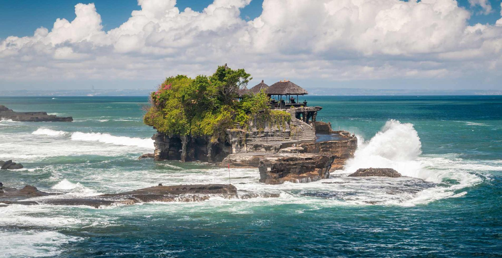

Híres templomok Balin

Tanah Lot
A híres tengeri templom, amely egy sziklán helyezkedik el és lenyűgöző naplementét kínál.

Ulun Danu Bratan
A Bratan-tó partján fekvő ikonikus templom, amely a vízen lebegő hatást kelti.

Besakih
A "Bali anyatemploma", amely a szent Agung-hegy lejtőin helyezkedik el.